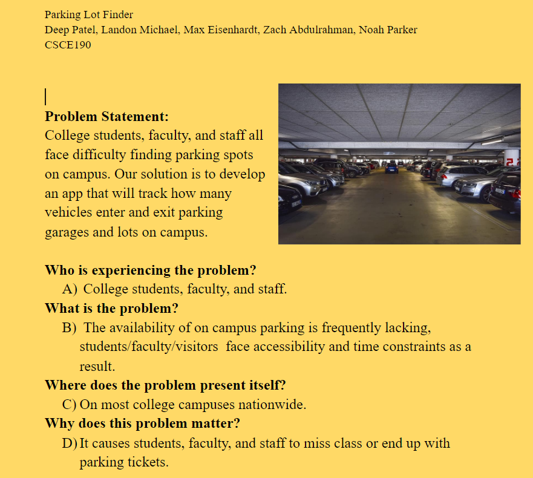
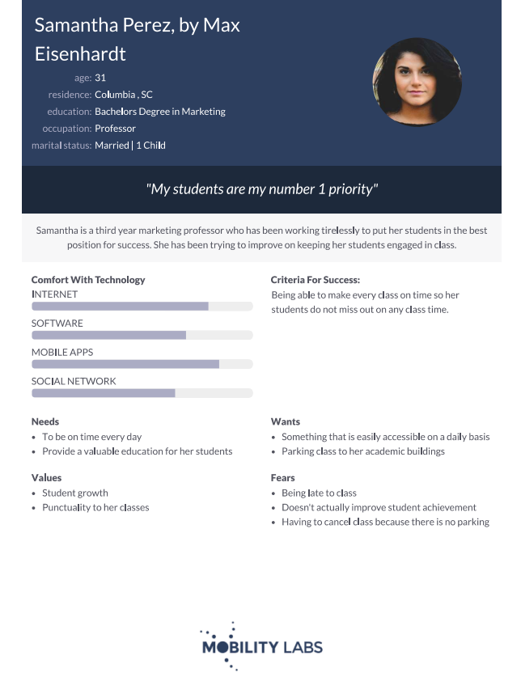
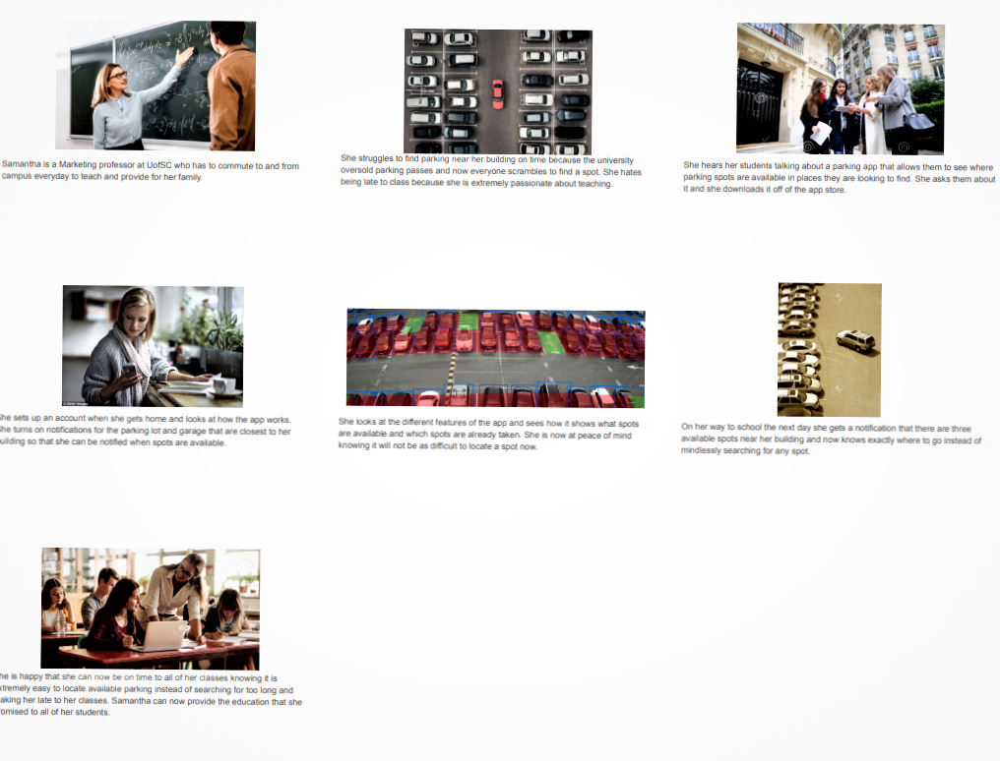
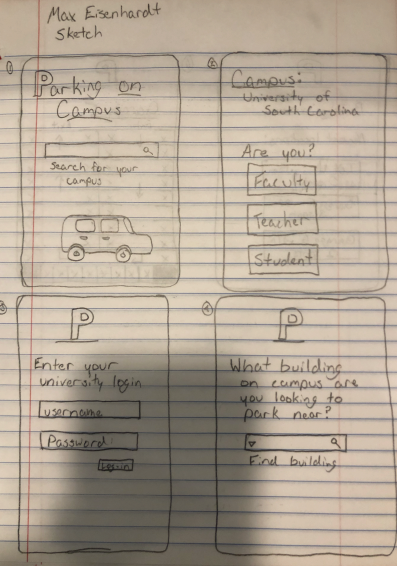
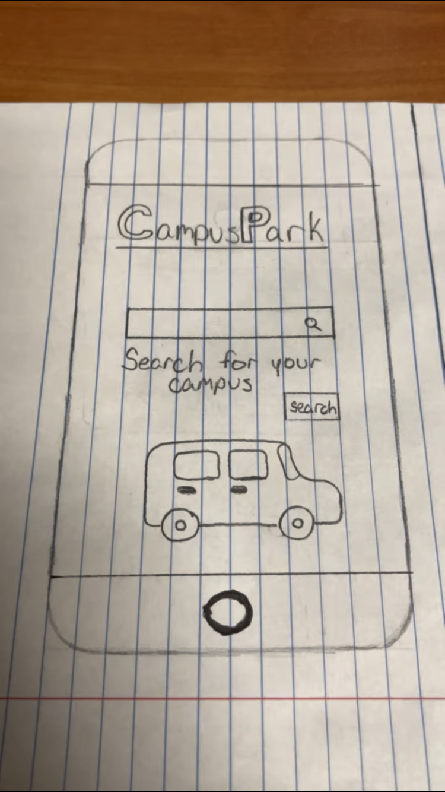

Problem Statement: Parking
College students, faculty, and staff all face difficulty finding parking spots on campus. Our solution is to develop an app that will track how many vehicles enter and exit parking garages and lots on campus.
Affinity Diagram: Parking

The Lobsters banded together to conceptualize everything about parking at the University of South Carolina.
Personna : 5 Personnas for Parking
The personnas for typical users of the parking app at University of South Carolina.
Storyboards: Parking
The storyboards for different users of the parking app at University of South Carolina.
App Sketches: Parking
The possible app sketches for the functionality of the parking app.
Paper Prototype: Parking
The paper walkthrough of each possible screen for the application.